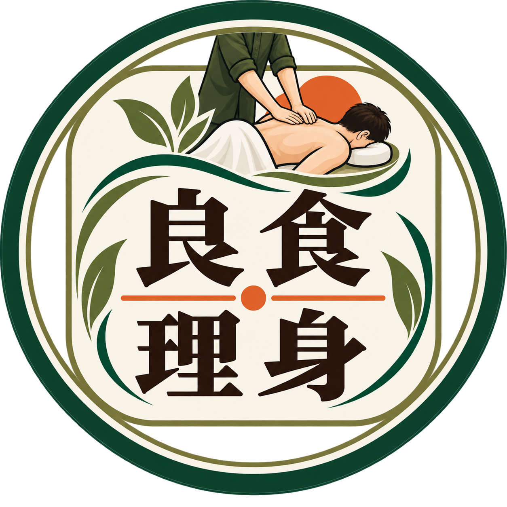

良食／理身
從吃進身體，到理身找因
吃得飽，不代表身體真的吃得好。身體的痠、痛、疲累，都是它正在說話——這裡整理了幾個最常被問到的問題。
常見問題
點開每一題，聽聽身體想說的話
吃得飽，不代表身體真的吃得好。
每天吃進去的東西、生活作息、睡眠與壓力，都會影響身體的狀態。
有時候身體出現痠、痛、疲累、睡不好等情況，其實是在提醒我們：該停下來，好好聽聽身體的聲音了。
檢查沒有發現異常，是一件好事。
但檢查正常，不代表身體的疲累與不舒服是假的。
有些狀況，是長期累積的壓力、緊繃、作息與生活習慣所造成。
不要因為檢查正常，就忽略身體一直給你的訊號。
痠、緊、痛，都是身體正在發出的訊號。
我們不只看「哪裡痛」，更想了解：為什麼會痛？什麼時候開始？是不是已經反覆很久了？
理身，不只是處理當下的不舒服，而是陪你一起了解身體真正想告訴你的事。
因為有時候，我們處理的只是「不舒服」，卻沒有回頭了解「為什麼」。
痠了就揉一揉，累了就休息一下，當下或許舒服了，但生活方式沒有改變，問題可能又再次出現。
身體反覆出現的訊號，值得我們停下來找一找原因。
我們相信，照顧身體可以從兩個地方開始。
良食——從吃進身體的開始，吃得對，讓身體有好的基礎。
理身——從了解身體開始，透過身體的反應，去認識自己的狀態。
從良食到理身，從吃進身體，到理身找因。陪你一步一步，重新認識自己的身體。
良食，
是照顧吃進去的。
理身，
是了解身體的。
從吃進身體，
到理身找因。